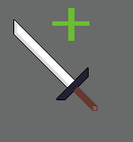

* Sign In
* Language
* Support
* THE STATUS
STAT
Your Level : LV
STR : LV
IQ : LV
exercise
study
* do you have account?, if you don't, sign up to start your adventure!
* The harder you make an effort in your life, the stronger you become in the game!
data of the pedometer in your phone and your study time will be converted into data in your status. so with your status, you can compete with other player.

* Make stories and experiences with your avata!
you can not only meet other player but also experience a lot of mobs and structure by exploring the vast world, and you can also preoccupy the natural resources and unique items spreaded all over the world to be the strongest player